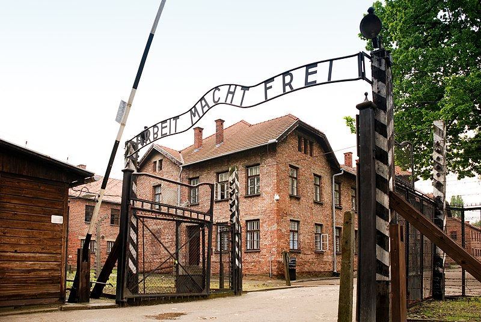

En esta página os mostaré como ha sido mi viaje por Cracovia durante 4 días
Durante este día nos estableceremos en el hotel y comentaremos con la visita a las zonas más centricas de Cracovia.
Para este día realizaremos una excusión de 3-4 horas a las minas de sal donde realizaremos una excursión bajo tierra.

Este día estaremos todo el día visitando las diferentes partes que forman el campo de concentración de Auschwitz
Para este último día dejaremos la excursión a las montañas de Zakopane.